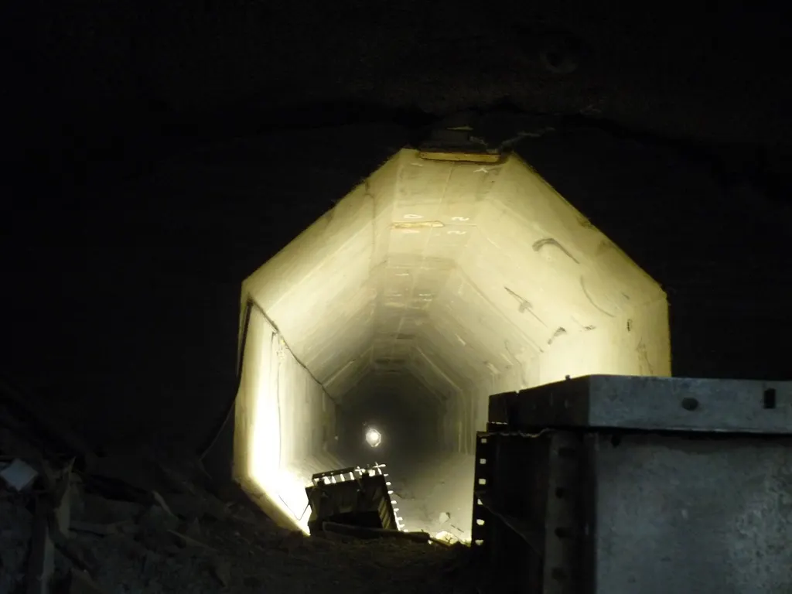

MBecker Engineering.
MBecker Engineering works independently with the possibility to work with powerful partners from the European construction industry and financial sector for the development and realisation of projects.
Fields of work
Infrastructure, structural engineering and energy, from the first idea to acceptance.
Infrastructure, Structural Engineering & Energy
- Industrial Plants
- Energy Plants
- Road Constructions
- Building Constructions
- Touristic Constructions
Subject Areas
- Airports / Ports
- Bridge Construction
- Thermal Power Plants
- Solar Plants
- Hydro Electrical Power Plants
- Housing Constructions
- Tunnelling
Services
- Project Development utilizing BIM Methodology
- Civil Engineering Services
- Procurement
- Project Management
- Construction Management from project start until acceptance and commissioning
Professional Development of Michael Becker
Three decades in construction: Germany, the Netherlands, Spain, Switzerland and international projects.
- 1993Start of professional career as a prospective Civil Engineer and Site Manager at the construction company Schulte GmbH, Germany (1-year contract)
- 1994Diploma as M. Sc. C. Eng. at the Technical University of Cologne and in parallel Project Manager at the engineering office ISAPLAN GmbH, Germany
- 1995Department Manager Civil Engineering and Project Manager Structural Engineering at the Dutch general contractor Wessels Remscheid GmbH, Germany, with a 1-year assignment in Nijmegen, Netherlands
- 1998Managing Director at the construction company Seinsche GmbH, Germany
- 2000Independence (50 % shares) with the construction company Rudolf Deubel GmbH and the pipe welding company RNT Potthoff GmbH, Germany
- 2006Freelance Civil Engineer in international project management (energy projects in Spain and the Netherlands)
- 2008Project Manager International Projects at Pöyry Schweiz Ltd., Switzerland
- 2010Head of Contract Management, client side, at the Gotthard Base Tunnel project, Switzerland
- 2013Senior Contract Manager at Marti Contractors Ltd. with a focus on international tunnelling projects (Austria, Norway, Slovakia, Bhutan)
- 2015Certification as Senior Project Manager, International Association of Project Managers (IAPM), Liechtenstein
- 2017Senior Contract Manager at the general contractor Steiner Ltd., Switzerland
- 2019Director Engineering at the international start-up engineering office SSB Ltd., Switzerland
- 2020Independent freelance Civil Engineer with a focus on national and international projects
- 2022Member of the Expert Chamber of Swiss Engineering
Memberships and tools

IAPM
Certified Senior Project Manager, International Association of Project Managers, Liechtenstein, since 2015.
iapm.net
BauMaster®
MBecker Engineering works with the project management software BauMaster® for project execution.
